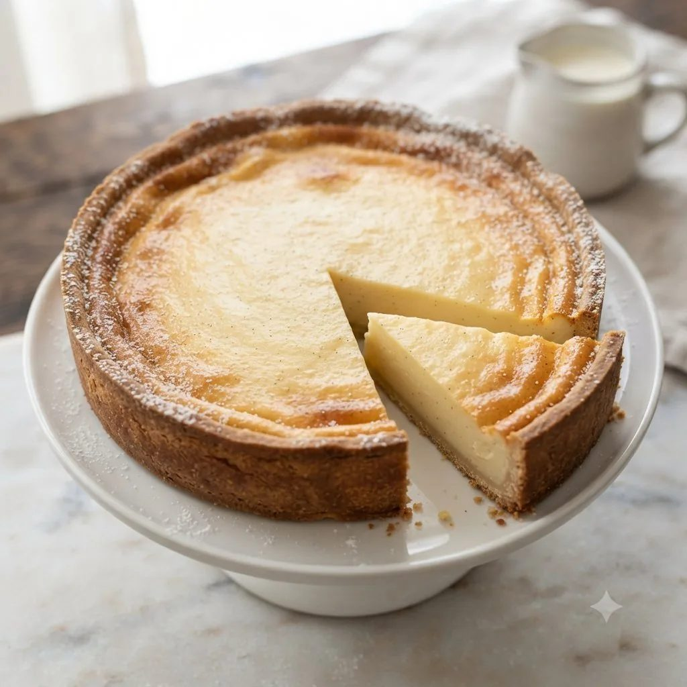

Tarte au fromage blanc
Pâte sucrée garnie d'un appareil au fromage blanc.

Pâte sucrée
- Farine220 g
- Maïzena30 g
- Beurre125 g
- Sucre glace100 g
- Jaune d'œuf45 g
Appareil fromage blanc
- Crème épaisse0,35 l
- Fromage blancqs
Étapes
- Mélanger farine, sucre glace et beurre, ajouter œufs et eau, réserver au froid.
- Abaisser et foncer le cercle, piquer.
- Réaliser l'appareil au fromage blanc et à la crème.
- Garnir le fond de tarte.
- Cuire à four moyen jusqu'à prise de l'appareil.
Vous produisez en volume ?
4Cake fournit les professionnels de la pâtisserie au Maroc : chocolat, fruits secs, décors et matériel, avec tarifs et conditionnements grossiste.
Voir les tarifs grossiste